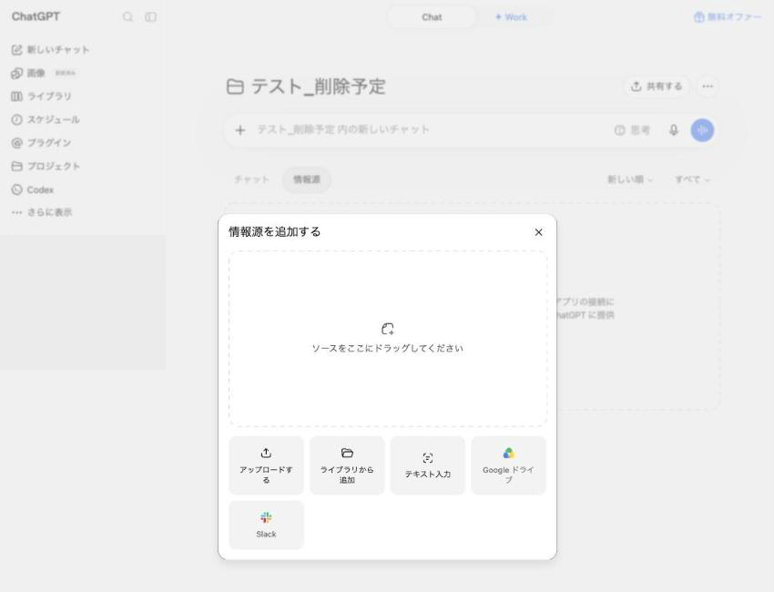
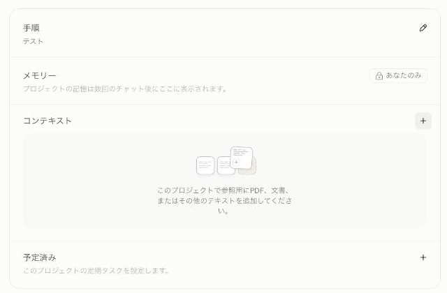
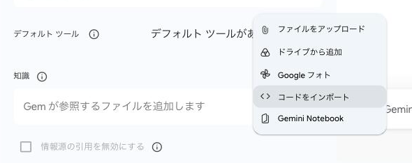

1今日の流れ
| ブロック | 時間 | この資料のどこを使うか |
|---|---|---|
| 体験と原理 | 24分 | 2・3 |
| ハンズオン | 36分 | 4（記入例・2つの入口・空欄テンプレ） |
| 休憩 | 10分 | 手が止まった方はそのまま4を続けてください |
| 置く・置かないの線引き | 16分 | 5 |
| 貼らない仕組みづくり | 16分 | 6 |
| Before/After | 10分 | 7 |
| 運用と質疑 | 8分 | 8・9 |
ノートPCがあると進めやすい内容です。スマートフォンでも同じ手順で進みます。
2体験: 先にBeforeを採る
いちばん最初に、比べるための答えを採っておきます。
新しい会話を開いて、次の一文と、ご自分が最近書いた文章を続けて投げてください。仕事のメール、お知らせ、案内文、どれでも大丈夫です。
この文章を直してください。この回答は閉じずに残しておいてください。最後にもう一度、同じ質問を投げて比べます。
手元に文章がない方は、下のサンプルを使ってください。
こんにちは！以前ご案内したイベントですが、いよいよ来週の開催になりました。まだお席あります。難しそうと思われる方も多いと思うんですが、はじめての方向けの回もあるので、普段あまり触っていない方でも大丈夫です。あと、もう一歩進んだ内容の回も同じ日にやります。こちらはPCがあった方がいいです。詳細は前の投稿を見てもらえたらと思います。当日お会いできるのを楽しみにしています！3原理: 渡し方の4段階
答えが浅いのは、前提が渡っていないからです。そして、渡すのが続かないのは、情報の中身ではなく置き場所が決まっていないからです。渡し方には4つの段があります。
| 段 | 状態 | 起きていること |
|---|---|---|
| 1 | 何も渡していない | AIが前提を推測で埋める。埋めた分だけ答えが他人事になる |
| 2 | 毎回貼る | 効くが、毎回の手間がかかる。用途が増えるとどれを貼るか迷う |
| 3 | 置いて呼び出す | 用途ごとの枠に入れておき、その枠の中では貼らずに効く |
| 4 | AIが取りに行く | 置いた場所をAIが自分で読みに行く |
2と3の間には、1枚をプロフィール設定に入れて全部の会話に効かせる段があります。1枚だけなら手軽ですが、全部の会話に効くので、効いてほしくない会話にも効きます。
あなたは今どこですか
今日は3へ進みます。
前提を渡さないまま依頼して、返ってきたものを直しているのと同じ構図です。
4ハンズオン: 3枠に分けて書く
(a) 3つの枠
| 枠 | 献立でいうと | 仕事でいうと | 置き場所と更新頻度 |
|---|---|---|---|
| 変わらない情報 | 家族構成・苦手なもの・食の方針・調理の条件 | 事業内容・読者やお客さま・普段の文体・避けたい表現 | 枠の指示欄に置く。年に数回直す |
| 季節で変わる情報 | 旬の食材・その時期に避けたいもの・肌の変わり方 | 繁閑・その時期の打ち出し・季節の行事 | 枠にファイルで入れる。季節ごとに差し替える |
| 毎週変わる情報 | 今週の予定・在庫・体調 | 今週出す予定の文章・今週の締切 | 置かずに、その会話で貼る |
分ける理由は、更新の頻度が違うものを同じ紙に書くと、直すたびに全部を読み直すことになるからです。
(b) 記入例
変わらない情報。
【変わらない情報】
（暮らし）
- 夫婦2人暮らし。作るのは主に私
- 夫の苦手なもの: オクラ／水分が少なくパサつく料理（チヂミ・粉ふきいも・ゆで卵など）／そぼろ状の肉料理（ひき肉を使うこと自体は問題ない）
- 和食が好み。夫が体重管理中のため、油と糖質は控えめに
- タンパク質は1食で合計50g以上が目安。塩分は食材総量の約1%が目安
- 夜は消化に重いものを避けたい
- 平日は30分以内で作り終えられる品数と内容にする
- 分量は再現できる形で書く。「塩少々」のような曖昧な表現は使わない
- 昆布と鰹節の出汁を常備。自家製の塩麹・醤油麹・ニンニク麹・生姜麹を、塩や醤油より優先して使いたい
- 食材は最寄りのスーパーで買える一般的なものにする
（仕事）
- 起業家のコミュニティで、勉強会とコラムを担当している
- 読者は起業家が中心。AIはある程度触っているが、業務や生活の仕組みに組み込むところまでは行っていない人が多い
- 普段の文体の見本は次のとおり
「同じAIを使っているのに、「便利だね」で止まる人と、手放せなくなる人がいます。その差は、どのツールを選んだかでも、有料プランかどうかでもありません。自分の情報を、どれだけAIに渡しているか。ただそれだけです。」季節で変わる情報。
【季節で変わる情報】
- 今は秋口。夏の疲れが残る時期で、火を使う料理が増やせる
- 旬: きのこ・さつまいも・秋刀魚・青菜
- 肌は季節の変わり目でゆらぎやすい。乾燥が出はじめる時期
- 勉強会とコラムが重なる時期で、9月は執筆の比重が高い毎週変わる情報。
【毎週変わる情報】
- 今週は平日の夜が3日埋まっている
- 冷蔵庫にあるもの: 鶏むね肉・豆腐・小松菜・卵
- 切らしているもの: 味噌
- 今週出す予定の文章: 開催前のお知らせ1本
- 体調: 睡眠が浅め。重いものは避けたい(c) 入口A: 手ぶらで来た方
新しい会話を開いて、次をそのまま貼ってください。20問がまとめて出るので、番号をつけて一度に答えてください。分からない項目は飛ばして大丈夫です。整形のあとに追加の質問が返ることがあります。数はツールによって違うので、気にしなくて大丈夫です。
私専用の情報カードを作りたいので、インタビューに付き合ってください。
まず、下の20問を私が一度に答えます。分からない項目や答えたくない項目は飛ばします。追加の質問は、私が答え終わったあとにまとめて聞いてください。
私が答え終わったら、先に答えを次の3つの見出しに振り分けて整形して返してください。追加の質問があれば、整形したもののあとに、まとめて聞いてください。私が答えていない項目は、勝手に埋めずに省いてください。
このやり取りで私が書いたことだけを使ってください。過去の会話や記憶にある内容は、確認の質問にも混ぜないでください。
【変わらない情報】年に数回しか変わらないこと
【季節で変わる情報】季節ごとに入れ替わること
【毎週変わる情報】その週だけのこと
習慣や方針（調理にかけられる時間、食べる頻度、好き嫌いなど）は【変わらない情報】です。【毎週変わる情報】は、今週限りの予定や状態だけにしてください。
見出しごとに箇条書きで、1行1項目、短い言い切りにしてください。
--- 質問 ---
1. 何人暮らしで、食事を作るのは主にどなたですか。
2. ご自身や家族が苦手な食材・料理の形はありますか。
3. 食事の方針で守りたいことはありますか（好みのジャンル、油や糖質、たんぱく質、塩分など）。
4. 平日の調理にかけられる時間と、作れる品数はどれくらいですか。
5. 常備している調味料と、優先して使いたいものは何ですか。
6. 肌のタイプと、体質で気をつけていることはありますか。
7. どんな事業をしていて、読者やお客さまはどんな方ですか。
8. 普段の文章の調子が分かる見本はありますか（すでに公開した文章を貼ってください）。
9. 文章で避けたい言い回しや表現はありますか。
10. 今の季節によく食べるもの、逆に避けたいものはありますか。
11. 季節によって肌の調子はどう変わりますか。
12. 仕事の忙しさは季節で変わりますか。今はどの時期にあたりますか。
13. この季節に決まってある予定や行事はありますか。
14. 季節で変わる買い物先や、この時期だけ手に入るものはありますか。
15. 今週の予定はどれくらい詰まっていますか。
16. 今週、家にある食材と、切らしているものは何ですか。
17. 今週の体調と気分はどうですか。
18. 今週中に出す予定の文章や連絡はありますか。
19. 今週、特に時間を取りたいことは何ですか。
20. 今週、外食や人と会う予定は何回ありますか。(d) 入口B: すでに文章がある方
まとめた文章をお持ちの方や、14時の回で1枚書いた方は、こちらから入ってください。新しい会話を開いて、次を貼り、続けてご自分の文章を貼ってください。
私の情報をまとめた文章を貼ります。これを次の3つの見出しに振り分けてください。
【変わらない情報】年に数回しか変わらないこと
【季節で変わる情報】季節ごとに入れ替わること
【毎週変わる情報】その週だけのこと
習慣や方針（調理にかけられる時間、食べる頻度、好き嫌いなど）は【変わらない情報】です。【毎週変わる情報】は、今週限りの予定や状態だけにしてください。
振り分けたあと、3つの枠それぞれで足りない項目だけを質問してください。全部まとめて一度に聞いてください。答えられない項目は飛ばします。
書いていないことを推測で埋めないでください。過去の会話や記憶にある内容も使わないでください。
--- ここから私の文章 ---(e) 空欄テンプレ
【変わらない情報】
-
-
-
【季節で変わる情報】
-
-
【毎週変わる情報】
-
-変わらないものと入れ替わるものを分けて持つのは、業務手順書の管理と同じです。
5置く・置かないの線引き
基準はひとつです。変わらないもので、漏れても困らないものを置きます。
| 置く | その会話で貼る | どこにも置かない |
|---|---|---|
| 好み・苦手なもの | 今週の予定 | 住所 |
| 守りたい制約 | 在庫・買い物のメモ | 病名・通院のこと |
| 普段の文体・避けたい表現 | 今日の体調と気分 | 口座番号・カード番号 |
| すでに公開している事業の情報 | その日だけの締切 | 家族や他人のフルネーム |
| 読者やお客さまの像 | 一度きりの相談内容 | パスワード |
| 未公開の契約・数字 |
自分の3枠を点検してください
社内で共有していい情報とそうでない情報の線引きと同じ判断です。
6貼らない仕組みづくり
自分専用の枠をつくって、そこに変わらない情報を入れます。この枠の中で会話を始めれば、毎回貼らなくても効きます。
ChatGPT
- 左のメニューの「プロジェクト」の横にある「＋」を押して、名前をつけます
- 「プロジェクト設定」の「指示」に、【変わらない情報】を貼ります
- 【季節で変わる情報】は、プロジェクトの「情報源」タブから「情報源を追加する」でファイルにして追加します
無料プランでは、1つのプロジェクトに追加できるファイルは5つまでです。



Claude
- 左のメニューの「プロジェクト」を開き、「新規プロジェクト」で名前をつけます
- 「プロジェクトの指示を設定」に、【変わらない情報】を貼ります
- 【季節で変わる情報】は、右側の「コンテキスト」の「＋」からファイルで追加します
無料プランでも作れますが、追加できる量には上限があります。



Gemini
- 左のメニューの「Gem マネージャー」を開き、「Gem を作成」で名前をつけます（呼び方だけが他の2つと違います）
- 「カスタム指示」に、【変わらない情報】を貼ります
- 【季節で変わる情報】は、「知識」の「＋」から「ファイルをアップロード」で追加します
無料プランでもファイルを追加できます。



指示欄には、情報をそのまま貼るのではなく、前置きを1行つけてから貼ってください。
以下は私の変わらない情報です。この枠での会話では、これを前提に答えてください。季節の情報はファイルにあります。今週だけの情報は、その都度こちらから貼ります。
【変わらない情報】一度置いた指示は、以後の全部の依頼に効き続けます。
7Before/After
いま作った枠の中で新しい会話を開いて、2で投げたのと同じ質問を、同じ文章で投げてください。文言は一字も変えないでください。
見ていただきたいのは4つです。
- 前提を聞き返す質問が減ったか
- 選択肢が絞られたか
- そのまま使える細かさになっているか
- 却下する手間が減ったか
記録欄
| 直した回数 | 気づいたこと | |
|---|---|---|
| Before（2で採った回答） | ||
| After（枠の中の回答） |
仕組みを入れたら効果を測る、をその場でやっています。
8運用サイクルと、その先
| 枠 | 更新の頻度 | やり方 |
|---|---|---|
| 変わらない情報 | 年に数回 | 指示欄を書き換える |
| 季節で変わる情報 | 季節ごと | ファイルを差し替える |
| 毎週変わる情報 | 毎週 | 置かずに、その会話で貼る |
仕組みは置いて終わりではなく、更新の担当と頻度を決めて初めて回ります。ご自分の予定に、季節の差し替えを1つ入れておいてください。
その先に、AIが必要な情報を自分で取りに行く仕組み（MCP）があります。次回以降の回で扱います。
暮らしは失敗コストが最も低い実験場です。ここで身につけた渡し方は、そのまま仕事に効きます。
9よくある質問
メモリがあるのに、なぜ枠に置くのですか
メモリは、AIが会話の中から勝手に拾って覚えます。何を覚えたかは後から確認も削除もできますが、選んで置いたものではありません。プロジェクトやGemは、自分が選んだ情報を自分で置きます。置いた中身は自分が把握しています。今日の「置いていい情報と、置かないほうがいい情報の線引き」が成り立つのは、自分で置く方式だからです。AIが勝手に拾う方式では線引きが効きません。3つの枠に分けて持てるのも、置く側で分けるからです。メモリは切らなくて大丈夫です。今日つくるのは、自分で中身を決めて置く箱のほうです。
14時の回で作った1枚はどうしますか
捨てずに、そのまま入口Bで使ってください。貼って、足りない項目だけ聞いてもらって、3つの枠に振り分けます。書き直す必要はありません。
無料枠が切れたらどうしますか
ChatGPTとGeminiは軽量のモデルに切り替わって、そのまま続けられます。Claudeは回復を待つことになります。今日のインタビューを1メッセージで投げる形にしてあるのは、そのためです。切れた方は、隣の方の画面を見ながら進めてください。